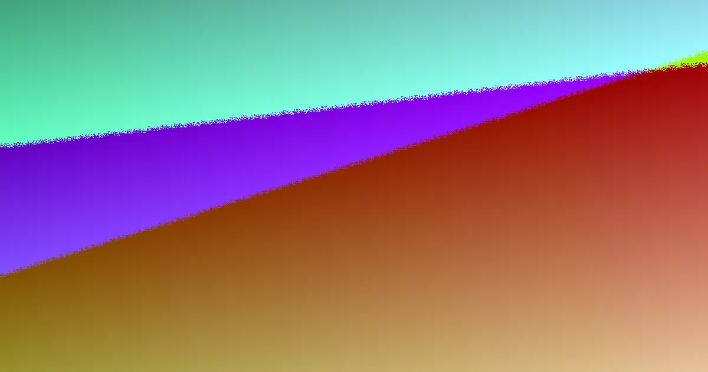

House and shed pad earthworks in Toowoomba depend on the block rather than a standard menu. A 6-tonne excavator with operator typically costs $105 to $130 an hour, while rock may add $69 to $99 per cubic metre ex GST, based on October 2026 figures. The final price depends on cut and fill, access, soil, spoil removal, drainage and rock. A site assessment and written scope clarify the work before machinery arrives.
For homeowners comparing house pads toowoomba options, the practical decision is how the block falls, what lies beneath it, how machinery will enter and what preparation the builder needs before the slab.
House Pads Toowoomba Explained
Earthworks Toowoomba describes a site assessment as the starting point. The block is checked for slope, machine access and buried features such as old fill, pipes and cables. These details influence where excavation can begin, how much soil moves and whether a narrow-access machine or larger excavator is suitable.
A steep block may need a deeper cut and more spoil movement than a flatter one. A larger excavator can save hours where there is a wide access path, while a smaller machine may fit a narrow side gap but work more slowly. Before accepting a price, record gate widths, side clearances, overhead obstructions and the route trucks will use.
Wet clay can affect both access and timing after rain. Ask which areas can support machinery, how dig days are planned around weather and what happens if the ground becomes too soft to work.
Build the pad in the right sequence
House pad preparation usually involves cutting into the high side of a block and building up the low side. Topsoil is generally stripped first because soft organic soil is a poor base beneath a slab. Fill is then placed in thin layers and compacted at suitable moisture before the area is graded.
A shed pad follows the same broad principles, but its footprint and truck route determine the layout. Provide the shed dimensions, intended position and any required finished level. A rear-yard location or narrow driveway may make access the main constraint even when the pad itself is small.
Drainage belongs in the same conversation as levelling. Water pooling against a wall may indicate incorrect fall or a blocked drain. A driveway that washes out during storms needs its water path and base considered before a new surface is installed. Ask where runoff will go and whether excavated material can be reused as fill.
Separate the main cost signals
The October 2026 guide gives a typical rate of $105 to $130 an hour for a 6-tonne excavator with its operator. That rate does not determine the whole job. Soil volume, cut depth, compaction, access and the destination of unused spoil can all change the final amount.
Rock beneath the topsoil is usually priced separately by cubic metre. The stated South East Queensland surcharge is typically $69 to $99 per cubic metre ex GST. Treat that as a site question rather than a guaranteed allowance, because the quantity found on a particular block still needs to be established.
When soil cannot all be reused, cartage and disposal add another cost. A written scope should identify cut and fill, pad preparation, access assumptions, rock treatment, spoil handling and any driveway or retaining-wall excavation. Queensland requires a written contract for larger domestic building work, and a contractor's licence can be checked on the QBCC register before agreement.
Coordinate related excavation
A block may need more than pad work, including driveway earthworks, footing excavation, trenching, retaining-wall cuts or yard clean-up. These items can be considered together, but each should be described separately so finished levels, access and disposal responsibilities are clear.
For a driveway, confirm the route, fall, surface height and stormwater direction. For a retaining-wall cut, ask what depth and working room are included. For trenches or footings, confirm the builder's set-out and whether buried services have been identified.
For another view of the planning issues, read this house pad planning guide for Toowoomba. The useful comparison is whether the proposed work fits the block's slope, access, soil and intended build.
Who this guide applies to
This guide suits homeowners, builders and property owners preparing a residential block in Toowoomba or nearby Darling Downs locations. It is most useful when a builder is waiting on the pad, the site falls away from the street or a quote changes after inspection.
- Homeowners should gather the address, access measurements, footprint and plans showing finished levels.
- Builders should state the required pad level, compaction expectations, access limits and needed completion date.
- Owners dealing with wet clay, suspected rock, old fill or surplus spoil should ask how those conditions appear in the written scope.
- Anyone engaging a contractor can check the relevant QBCC licence before signing a larger domestic building contract.
The next action is a site review that records the fall of the block, machinery access, possible material removal and separately priced work.
- Gather site information. Provide the address, plans, footprint, access details and date the prepared area is needed.
- Walk the block. Review slope, soil, possible rock, buried services, machinery access, drainage and spoil reuse.
- Define the scope. Separate pad work from driveway, retaining-wall, trenching, footing and spoil-removal items.
- Check the written price. Confirm assumptions, exclusions, rock treatment, disposal and weather-related timing before agreeing.
| Site condition | Planning focus | Question to ask |
|---|---|---|
| Steep block | More cut, fill and spoil movement | What finished level and cut depth are assumed? |
| Narrow access | Smaller machine and slower excavation | What machine fits, and how will trucks reach the work area? |
| Rock below topsoil | Separate material allowance | Is rock included, and is it priced by cubic metre? |
| Wet clay or rain | Weather-sensitive sequencing | What conditions pause excavation? |
| Surplus soil | Cartage and disposal | What quantity can be reused? |
Common questions
How much does a 6-tonne excavator cost in Toowoomba? The October 2026 guide gives a typical rate of $105 to $130 an hour with an operator. The total depends on soil, access, excavation volume and spoil handling.
Can rock change the earthworks price? Rock below topsoil is usually priced separately by cubic metre. The stated South East Queensland surcharge is typically $69 to $99 per cubic metre ex GST, subject to the site assessment.
How long will a house pad take? An open, relatively flat block may move quickly, while a deep cut into a slope can add days. Wet weather can stop machinery, so timing firms up after the block is assessed.
What should be checked before excavation? Check slope, access, buried pipes or cables, finished level, drainage direction, possible rock and surplus spoil. Confirm the written scope and relevant QBCC licence.
Are shed pads planned differently? They use the same stripping, cut, fill, grading and compaction principles, but the shed footprint and truck route determine the layout.
This guide covers residential pad preparation, access, cost signals, drainage questions and quote checks for Toowoomba blocks.